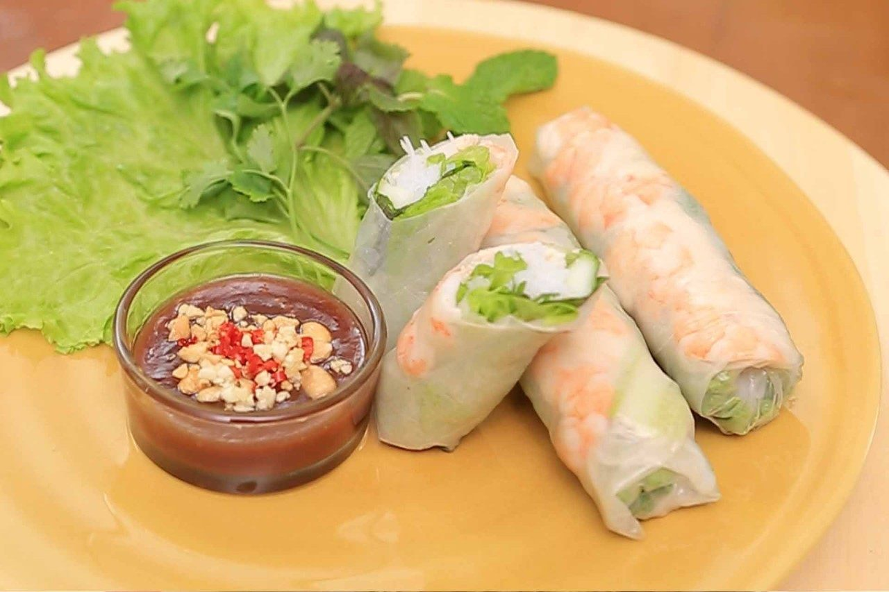

Introduction:
These spring rolls are fresh, crispy, flavourful, and just a perfect meal or snack for every season, despite the name.
It's one of my favourite food because of how light yet nutritious and filling it is.
Overall, it has a great taste, and you simply just can't get tired of it.
Ingredients:
Makes 8 spring rolls.
- 8 rice paper wrappers - 8.5 inches in diameter
- 2 ounces of rice vermicelli
- 24 shrimps (cooked and deveined)
- 2 butter lettuce leaves, chopped
- 3 tablespoons of chopped mint leaves
- 1 cup of warm water
- 4 teaspoons of fish sauce
- 2 tablespoons of lime juice
- 2 tablespoons of white sugar
- ½ teaspoon of garlic chili sauce
- 2 teaspoons of peanut butter
- 3 tablespoons of hoisin sauce
Steps:
- Boil the rice vermicelli for 3-5 minutes in a medium saucepan at 100°C.
Once done, drain the water.
- In a large bowl of water, dip the rice wrapper in for one second, or when it softens.
Take it out and lay it on a surface.
- Place lettuce leaves on the bottom half of the wrapper. Add any other vegetables as desired.
Leave some space on the sides for wrapping.
- Place three shrimps horizontal to the lettuce.
- Roll the wrap tightly starting from the bottom.
Tuck in the sides halfway through. Repeat with the other wrappers.
- Time for the sauce: Mix 2 to 4 tablespoons of water with the fish sauce, lime juice, sugar,
garlic chili sauce, peanut butter, and hoisin sauce. Mix well.
- Dip the rolls in the sauce and enjoy!